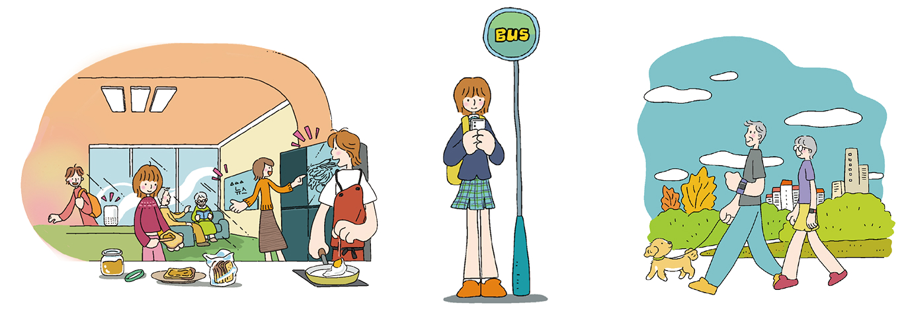

개념 학습
사물 인터넷 기술로 인한 개인의 삶의 변화
사물 인터넷 기술은 개인의 삶에 큰 변화를 가져오고 있다. 일상생활에 여러 편리함을 제공하고, 불편하거나 해결이 어려웠던 다양한 문제를 해결하는 데 도움을 준다. 사물 인터넷 사용으로 우리의 삶이 어떻게 변화되고 있는지 살펴보자.

스마트 전등
스마트폰을 이용해 조명의 색상과 밝기를 조절하고, 전등을 켜고 끈다.
인공지능 스피커
실시간으로 받은 교통 상황 정보를 기반으로 기상 시간을 계산하여 나를 깨운다. 식사하는 동안 평소 내가 좋아하는 음악을 들려 준다.
스마트 냉장고
냉장고 문을 열지 않고도 냉장고 안의 음식 재료를 인식하여 냉장고 안에 있는 재료로 만들 수 있는 요리를 추천해 준다. 남은 식료품의 양이나 유통 기한을 파악하여 부족한 식료품을 마트에 주문해 준다.
스마트 앱
앱으로 버스 도착 시간을 확인한다.
스마트 안경
전화, 음악 듣기, 영상 시청, 사진 찍기 등이 가능하다.
스마트 의류
피부 온도와 심장 박동을 측정해 내장 배터리에서 공급되는 전력으로 사용자의 체온을 안정적으로 유지한다.
스마트 신발
신발 속 가속 센서와 압력 센서 등이 움직임을 감지해 운동량, 열량 소모량을 측정한다.
스마트 목걸이
반려동물의 위치를 추적할 뿐만 아니라 활동량을 측정해서 건강상태를 알려준다.
스마트 바지
인공 근육이 들어가 있어 근력이 약한 사람이나 고령자가 보행을 잘할 수 있도록 도와준다.
스마트 팔찌
스마트폰과 연동하여 실시간으로 심박수 또는 혈압 상태를 체크하고 운동량이나 열량 등을 측정하여 건강 관리에 도움을 준다.
다시 하기